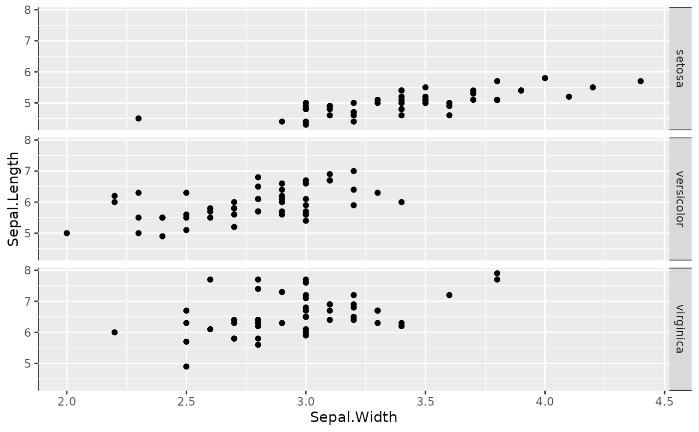

The element_part_rect() function draws sides of a rectangle as theme
elements. It can substitute element_rect() theme elements.
Usage
element_part_rect(
side = "tlbr",
fill = NULL,
colour = NULL,
linewidth = NULL,
linetype = NULL,
color = NULL,
inherit.blank = FALSE
)Arguments
- side
A
characterof length one containing any of"t","l","b","r". If these letters are present it will draw an edge at the top (t), left (l), bottom (b) or right (r) respectively. Including all or none of these letters will default to normalelement_rect().- fill
Fill colour.
- colour, color
Line/border colour. Color is an alias for colour.
- linewidth
Line/border size in mm.
- linetype
Line type. An integer (0:8), a name (blank, solid, dashed, dotted, dotdash, longdash, twodash), or a string with an even number (up to eight) of hexadecimal digits which give the lengths in consecutive positions in the string.
- inherit.blank
Should this element inherit the existence of an
element_blankamong its parents? IfTRUEthe existence of a blank element among its parents will cause this element to be blank as well. IfFALSEany blank parent element will be ignored when calculating final element state.
Examples
ggplot(iris, aes(Sepal.Width, Sepal.Length)) +
geom_point() +
facet_grid(Species ~.) +
theme(
strip.background = element_part_rect(side = "tb", colour = "black"),
panel.background = element_part_rect(side = "l", colour = "black")
)
